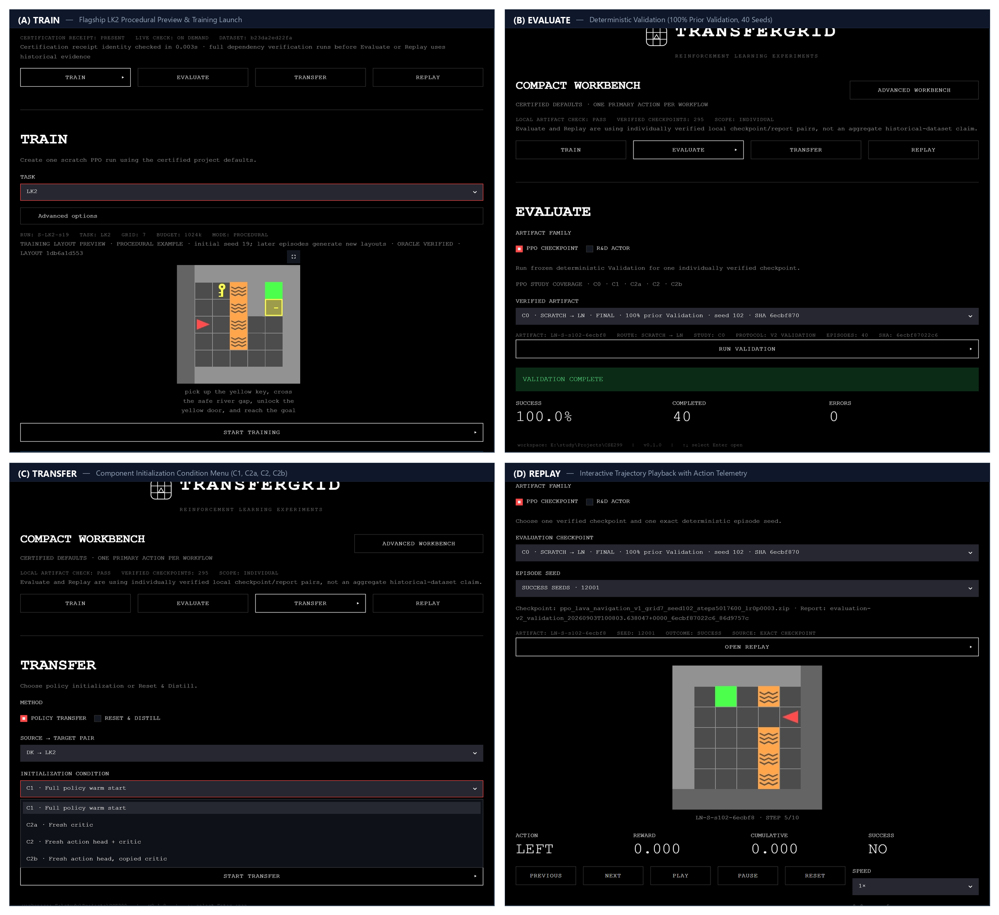
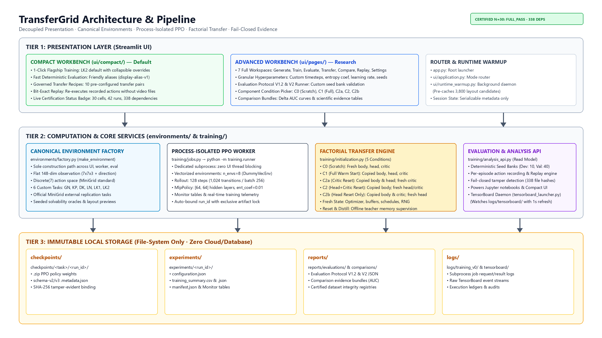

Train
Launch PPO in an isolated process with an explicit task, seed and budget.
Local reinforcement-learning workbench
Train, evaluate, transfer and replay MiniGrid policies through one focused interface.
Run locally ↗
Four connected workflows
Launch PPO in an isolated process with an explicit task, seed and budget.
Inspect a saved checkpoint through deterministic validation episodes.
Copy a policy or reset selected actor–critic components before target training.
Step through recorded behavior with playback and frame controls.
Built for inspection
Environment construction is shared across previews, training, evaluation and replay. Saved checkpoints remain bound to their configuration and provenance metadata.
